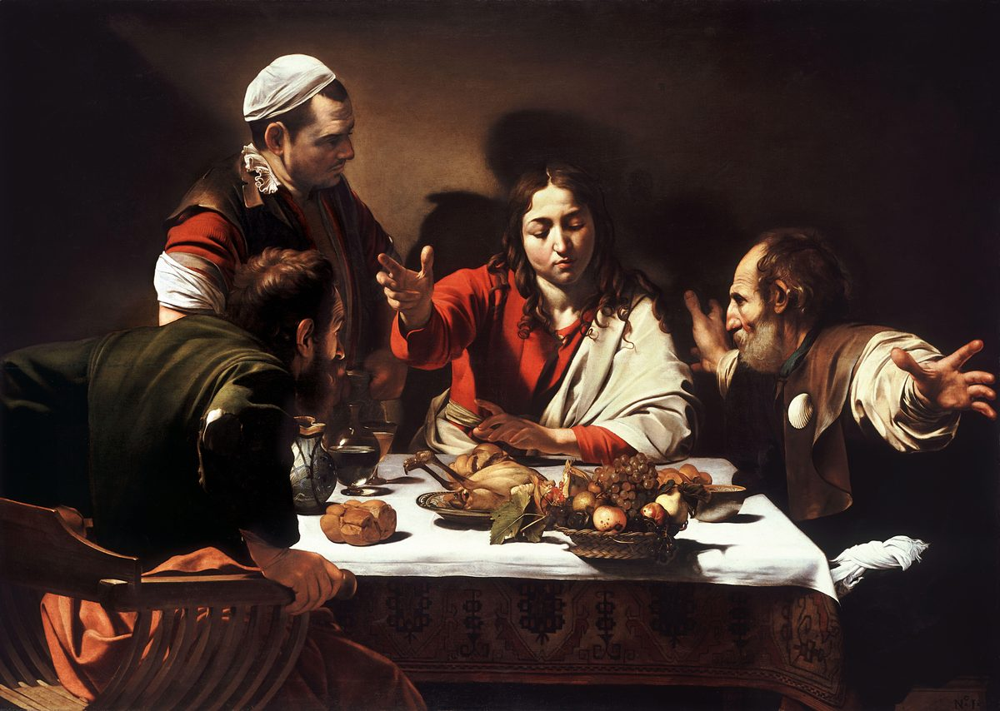

Lucas 24 — La Traducción Mister

Pintada en el instante exacto que nombra el propio verbo de este capítulo, diēnoichthēsan — el momento en que se abren los ojos (v31) —, Caravaggio congela a los dos discípulos a mitad del reconocimiento, uno aferrado a su silla para levantarse, el otro abriendo los brazos tan de par en par que el propio espacio ilusionista del cuadro parece quebrarse; el posadero de pie junto a ellos, iluminado por la misma luz, ve la misma mesa y no entiende nada, el argumento silencioso del propio cuadro de que el reconocimiento fue dado, no simplemente algo que bastaba notar.
.jpg){kind=link}
⭐⭐ «El primer día de la semana» es como los cuatro Evangelios fechan la resurrección —uno de los pocos detalles que Mateo, Marcos, Lucas y Juan comparten todos. Tē mia tōn sabbatōn, literalmente «el día uno de los sábados», usa sabbaton con soltura para toda la semana de siete días, un uso ya visto en 18:12 (ya en estas páginas, «ayuno dos veces a la semana»). Marcos 16:2 fecha la visita de las mujeres con la frase idéntica y Mateo 28:1 con una casi idéntica, eis mian sabbatōn (ambos ya en estas páginas); el propio relato de Juan la usa también (20:1, todavía no en estas páginas). Este es el día que este proyecto llama DOMINGO en su edición en inglés, y su observancia cristiana como día de adoración, en lugar del sábado, se remonta a esta frase, repetida cuatro veces.
⚠ «El cuerpo» —no «el cuerpo del Señor Jesús». Es la primera de las «no interpolaciones occidentales» del capítulo (véase el v6). La lectura más completa es la antigua: el papiro más antiguo de Lucas (P75), el Sinaítico y el Vaticano añaden «del Señor Jesús» después de «cuerpo», y la KJV, ‘the body of the Lord Jesus’, la ASV, ‘the body of the Lord Jesus’, y la TNM, «el cuerpo del Señor Jesús», lo imprimen como texto corrido llano. Son el Códice de Beza y la Vetus Latina los que leen simplemente «el cuerpo». Westcott y Hort juzgaron original esa lectura más corta, y la edición griega que sigue esta traducción (el Nuevo Testamento Griego de la SBL) todavía la imprime, así que eso es lo que se lee aquí —uno de los dos lugares del grupo de Lucas donde se sigue sin más la lectura más corta (el v36 es el otro), contra los manuscritos más antiguos y contra el estante a la vez.
⭐⭐⭐ «¿Por qué buscan al que vive entre los muertos?» es exclusivo del propio relato de Lucas —ni el mensajero de Mateo 28:5–7 ni el joven de Marcos 16:6–7 (ambos ya en estas páginas) preguntan nada; ambos simplemente anuncian. Solo aquí la pregunta misma lleva todo el argumento: ho zōn, «el que vive», es el participio que este Evangelio ya usó una vez en plural, en el argumento de la zarza ardiente para la resurrección de los muertos, de los patriarcas que viven para Dios («no es Dios de muertos, sino de vivos», 20:38, ya en estas páginas) —ahora en singular, de Jesús mismo, en el momento preciso del relato en que podría probarse verdadero o falso con solo abrir una tumba.
⚠⚠ Toda la primera frase del v6, «No está aquí, sino que ha sido levantado», está ausente del Códice Beza y de los manuscritos latinos antiguos —pero presente, sin corchetes, en los testigos griegos más antiguos que sigue este proyecto, entre ellos los Códices Sinaítico y Vaticano. Este es uno de un pequeño grupo de lugares hacia el final del propio Evangelio de Lucas (véanse también el v3 más arriba, y los vv12, 36, 40, 51–52 más abajo) donde los editores decimonónicos Westcott y Hort juzgaron original la lectura MÁS CORTA —lo opuesto al patrón habitual, donde un escriba posterior suele sorprenderse AÑADIENDO material en vez de quitándolo, razón exacta por la que este puñado de versículos ganó el nombre de «no interpolaciones occidentales» en la literatura de crítica textual que siguió. Las ediciones críticas modernas, desde mediados del siglo veinte en adelante, en su mayoría han revertido el juicio de Westcott y Hort en este versículo particular e imprimen la frase como texto corrido; la biblioteca sigue aquí ese consenso posterior, manteniendo la frase, mientras señala los dos lugares, el v3 más arriba y el v36 más abajo, donde el texto usado para esta traducción mantiene una lectura más corta que la mayor parte del estante no tiene.
La «ropa resplandeciente» (v4) reaparece casi con las mismas palabras desde el monte siete capítulos antes —la propia vestidura de Jesús «se volvió deslumbrante y blanca» en la Transfiguración (9:29, ya en estas páginas), el mismo verbo del relámpago, compuesto allí (exastraptō) y simple aquí (astraptō), usado allí de Jesús mismo y aquí de los dos mensajeros en su tumba.
«Se acordaron de sus palabras» responde a una promesa que este Evangelio plantó en la anunciación y el nacimiento: María, a quien se le dicen cosas que todavía no entiende, «guardaba todas estas cosas, meditándolas en su corazón» (2:19, ya en estas páginas); aquí, por primera vez en el relato, un grupo de discípulos hace lo mismo con una predicción propia de Jesús, y el propio recordar se convierte en la bisagra que convierte once versículos de confusión en un informe.
⭐⭐⭐ Solo el propio relato de Lucas nombra a las mujeres que llevaron el primer informe —y solo el propio narrador de Lucas declara, en una palabra tajante, exactamente cómo lo recibieron los Once. Véase la nueva entrada del diccionario lēros: el sustantivo, traducido «disparate», es un hápax legómenon —esta es su única aparición en todo el griego neotestamentario. Ni Mateo ni Marcos usan en su relato de las mujeres una sola palabra tan dura; el narrador de Lucas sí, y la aplica a un testimonio que, bajo la ley de la época, no podía por sí solo establecer un hecho en un tribunal judío. Esta traducción expone la palabra sin suavizarla, porque la franqueza es el punto: la primera respuesta a la resurrección, dentro del propio relato de este Evangelio, es la incredulidad, no la fe.
María Magdalena y Juana fueron nombradas una vez antes, con Susana, entre las mujeres que proveían para Jesús y los Doce «de sus propios bienes» (8:2–3, ya en estas páginas) —las mujeres que lo habían seguido desde Galilea son las que encuentran la tumba vacía.
⚠⚠ Como el v6, este versículo es una de las «no interpolaciones occidentales» —ausente del Códice Beza y de los manuscritos latinos antiguos, pero mantenida aquí sobre la fuerza de los testigos griegos más antiguos que sí la tienen. La KJV y la ASV imprimen ambas el versículo como texto corrido llano, sin corchete alguno; la NWT 1984 lo mantiene, como el v6, entre dobles corchetes, señalando visiblemente una duda que el propio texto de esta traducción no marca —imprime el versículo sin corchetes y deja la duda a esta nota. Algunos eruditos han argumentado que el versículo fue importado del propio relato más extenso de Juan sobre Pedro (y el discípulo amado) corriendo a la tumba (Juan 20:3–10, todavía no en estas páginas); otros toman la breve versión de Lucas como el informe más temprano que Juan luego amplió. La biblioteca expone ambas lecturas y no decide entre ellas.
Pedro corriendo, en vez de caminando, es el segundo uso propio de este Evangelio del verbo trechō, correr —el primero es el padre del hijo pródigo, que «corrió» a recibir a un hijo que había dado por perdido (15:20, ya en estas páginas). Ambas carreras responden a una pérdida que el que corre no esperaba ver revertida.
⭐⭐ «Sus ojos eran retenidos» es un verbo pasivo sin agente declarado —la gramática ordinaria que los eruditos llaman «pasivo divino», donde se entiende que Dios (o aquí, verosímilmente, el propio Jesús resucitado) es quien actúa, sin ser nombrado. El texto no dice que Jesús se disfrazó, se puso otra ropa, o simplemente no fue reconocido en medio del duelo ordinario; dice que sus ojos ERAN RETENIDOS —la misma construcción pasiva que el v31 usará al revés, cuando sus ojos SEAN ABIERTOS. Lo que sea que los mantuvo sin ver es la misma clase de cosa que, seis versículos después, les permitirá ver: no un cambio en su apariencia, según esta lectura, sino un cambio obrado en ellos. La TLB lee el pasivo de la misma forma que esta traducción, nombrando abiertamente al agente que el griego deja sin declarar: ‘they didn’t recognize him, for God kept them from it’ («no lo reconocieron, porque Dios se lo impidió») —la paráfrasis suple precisamente la palabra, Dios, que la propia gramática del pasivo divino implica sin decirla.
⚠ Sesenta estadios, o ciento sesenta —los manuscritos no concuerdan sobre la distancia misma, lo cual es una razón por la que la ubicación exacta de Emaús nunca se ha resuelto. Véase la nueva entrada de la enciclopedia Emaús: el texto seguido aquí lee «sesenta estadios», unos once kilómetros. La KJV conserva la unidad antigua, ‘threescore furlongs’, y la ASV también, ‘threescore furlongs’; la NWT 1984 convierte la misma distancia directamente a la más familiar ‘about seven miles’, sin conservar unidad antigua alguna. Una minoría de manuscritos, entre ellos el Códice Sinaítico, lee «ciento sesenta estadios», unos treinta y un kilómetros —una lectura que ninguna de las tres versiones consultadas adopta, pero que algunos geógrafos han usado para defender Emaús Nicópolis —un sitio que haría del regreso a Jerusalén «en esa misma hora» (v33) una caminata de unos treinta kilómetros de noche.
⭐ A Cleofás se le nombra una vez, aquí, y nunca más en el Nuevo Testamento —a su compañero no se le nombra en absoluto. Véase la nueva entrada de la enciclopedia Cleofás: la tradición, desde la iglesia primitiva, ha supuesto a menudo que el segundo caminante sin nombre era su esposa, apoyándose en una «María, esposa de Cleofás» nombrada junto a la cruz en Juan 19:25 (todavía no en estas páginas) —un nombre griego DISTINTO, Klōpas en vez de Kleopas, aunque los dos se confunden con frecuencia en la tradición posterior. El texto mismo no declara ni la identidad del compañero ni la relación; esta traducción expone la suposición como suposición.
⚠ «Jesús el nazareno» usa la ortografía que el propio narrador de este Evangelio evita en otros lugares. La propia palabra de Cleofás aquí, Nazarēnos, coincide con el saludo del espíritu impuro en 4:34 (ya en estas páginas); en otros lugares de este Evangelio donde aparece la misma idea en voz del narrador o de otro hablante, es en cambio la forma alterna Nazōraios —la ortografía que usó la multitud en 18:37 (ya en estas páginas). Ambas se traducen aquí «nazareno»; las dos formas señalan al mismo pueblo sin que esta traducción detecte diferencia alguna de sentido.
«Esperábamos que él fuera el que iba a redimir a Israel» (v21) es la misma raíz, lytro-, que los cánticos con que abre este Evangelio usaron de Dios (allí el sustantivo, lytrōsis): Zacarías bendijo al Dios de Israel «porque ha visitado y traído redención a su pueblo» (1:68, ya en estas páginas). Cleofás formula la esperanza en pasado —ēlpizomen, «NOSOTROS ESPERÁBAMOS»—, una gramática que marca una esperanza ya abandonada, dicha, sin que ninguno de los dos se dé cuenta, directamente al hombre del que trataba la esperanza.
⭐⭐ «Lentos de corazón» es el propio veredicto de Jesús sobre una incredulidad que sigue a la evidencia en vez de faltarle —los dos caminantes ya han oído el informe de las mujeres (vv22–24) y todavía no lo conectan con lo que «dijeron los profetas». La reprensión no apunta a dudar de un rumor; apunta a no haber leído bien las Escrituras desde el principio. Diermēneusen, «interpretó» (v27), es un compuesto construido sobre la misma raíz que da al español «hermenéutica», la disciplina misma de la interpretación —y este es el versículo que le da nombre.
⭐⭐⭐ «Comenzando desde Moisés y desde todos los profetas… en todas las Escrituras» es una afirmación de cumplimiento escritural tan abarcadora como la que más en los cuatro Evangelios —solo la iguala el v44 de este mismo capítulo, que añade los Salmos— y el texto nunca dice qué versículos específicos usó Jesús. En otras partes de este Evangelio «lo que está escrito» suele ser un texto citado (Isaías en 4:18–19, el Salmo 118 en 20:17, Isaías 53 en 22:37); aquí, como en las afirmaciones de resumen de 18:31 y de los vv44–46, es todo un cuerpo de escritura sin nada citado, y el contenido de una caminata de once kilómetros de enseñanza se resume en una sola cláusula. La TNM lee «les interpretó cosas referentes a él en todas las Escrituras»; la KJV ‘he expounded unto them in all the scriptures the things concerning himself’ —ninguna de las dos, ni otra de este estante, suple lo que tampoco pueden suplir las propias notas de esta traducción: los versículos mismos son el silencio de Lucas, no el de esta biblioteca.
«Hizo como que iba más lejos» declara, sin disculpa, que la propia acción de Jesús aquí fue una especie de actuación —prospoieomai es el verbo ordinario para fingir, y la KJV, la ASV y la NWT 1984 lo traducen todas de la misma forma —«made as though», «made as though», «made as if». El versículo no resuelve la incomodidad que algunos lectores sienten ante un engaño, por pequeño que sea, escenificado por el propio Jesús; la convención de hospitalidad antigua leía la reticencia simbólica de un huésped como el gesto cortés que permitía al anfitrión insistir, y Cleofás y su compañero hacen exactamente eso —«le insistieron», parebiasanto, un verbo que el Nuevo Testamento usa solo una vez más, de Lidia insistiendo en que Pablo y sus compañeros se quedaran en su casa (Hechos 16:15, todavía no en estas páginas) —las dos veces, un anfitrión que no acepta un no por respuesta. Cualquiera sea la lectura preferida, esta traducción expone el sentido llano del verbo en vez de suavizarlo.
⭐⭐⭐ La misma bendición del pan se reconoce en vez de repetirse —y son los cuatro pasos, en orden, que este Evangelio da a toda comida que Jesús preside. «Tomó… bendijo… partió… dio» (v30) es la secuencia de la alimentación de los cinco mil, donde el verbo es también «bendijo» (9:16), y de la Última Cena dos noches antes, donde es «dio gracias»: «tomó pan, dio gracias, lo partió y se lo dio» (22:19, ya en estas páginas) —una comida a la que Cleofás y su compañero, según el propio silencio del texto, casi con certeza no asistieron. Lo que reconocen no es un gesto privado que una vez presenciaron, sino un patrón que ya se está volviendo la forma recordada de la propia iglesia para la comida que Pablo más tarde llamará «la Cena del Señor» (1 Corintios 11:20, todavía no en estas páginas).
⭐⭐⭐ La nueva entrada del diccionario dianoígō: el mismo verbo griego, «abrir por completo», realiza tres clases distintas de apertura en este único capítulo —OJOS (v31), ESCRITURAS (v32), y, diecisiete versículos después, una MENTE (v45). El verbo aparece en otros cinco versículos del Nuevo Testamento, todos menos uno del propio Lucas —la excepción es el Effatá de Marcos, «ábrete» (Marcos 7:34, ya en estas páginas): antes, en este mismo Evangelio, de un primogénito que «abre la matriz» (2:23, ya en estas páginas, un sentido legal completamente distinto); en el propio segundo volumen de Lucas, de Esteban viendo «los cielos abiertos» en su muerte (Hechos 7:56, todavía no en estas páginas); del Señor abriendo el corazón de la comerciante Lidia «para que prestara atención a lo que Pablo decía» (Hechos 16:14, todavía no en estas páginas) —un corazón abierto y no una mente, pero la acción idéntica sobre el mismo tipo de resistencia que los dos caminantes de este capítulo necesitaban ver levantada; y una vez más, donde Pablo en una sinagoga está «abriendo y demostrando que el Cristo tenía que padecer y resucitar de entre los muertos» (Hechos 17:3, todavía no en estas páginas) —el verbo idéntico, sobre el argumento idéntico, del propio capítulo posterior del mismo autor. Una sola palabra hace el ver, el entender y, más tarde en Hechos, el argumentar.
El «corazón ardiente» (v32) nombra, después del hecho, lo que la propia nota de esta traducción al v25 llamó lentitud —los mismos dos caminantes, reconociendo en retrospectiva que la reprensión y la exposición ya habían comenzado a obrar en ellos antes de que pudieran ver quién la pronunciaba.
⭐⭐⭐ «Se ha aparecido a Simón» es la única mención, en los cuatro Evangelios, de una aparición privada de resurrección a Pedro solo —y este Evangelio nunca la narra, solo informa que los Once ya lo decían cuando llegaron los dos caminantes de Emaús. La propia fórmula credal de Pablo, probablemente más antigua que cualquier Evangelio y ya fija para cuando él la recibió, abre su lista de testigos de la misma manera: «se apareció a Cefas, luego a los Doce» (1 Corintios 15:5, todavía no en estas páginas) —el verbo idéntico, ōphthē, y la prioridad idéntica dada a Pedro sobre el grupo más amplio, desde una fuente escrita independiente. Dos hebras separadas de la tradición neotestamentaria coinciden en que Pedro fue, al menos, el primero nombrado, y ninguna dice qué se le dijo.
⚠⚠⚠ «La paz sea con ustedes» falta por completo del texto seguido aquí —no entre corchetes, simplemente ausente— frente a la KJV, la ASV e incluso la NWT, que pone la cláusula entre dobles corchetes en vez de suprimirla. Es otra de las no interpolaciones occidentales del capítulo (véanse los vv3 y 6). Los testigos más antiguos —P75, el Sinaítico, el Vaticano— tienen todos «y les dijo: ‘Paz a ustedes’»; son el Códice de Beza y la Vetus Latina los que carecen de ella. Westcott y Hort juzgaron original la lectura más corta, y el Nuevo Testamento Griego de la SBL que sigue esta traducción todavía omite la cláusula, y por eso falta aquí. La KJV y la ASV la imprimen ambas como texto corrido llano, ‘Peace be unto you’. La NWT 1984 es la única versión del estante consultada aquí que señala una duda real en este punto, imprimiendo la cláusula entre dobles corchetes, ‘[[May YOU have peace]]’ —visiblemente menos segura de ella que la KJV o la ASV, pero aun así más segura que el texto más corto seguido en esta página, que la omite del todo. Si la lectura más corta es correcta, el primer acto de Jesús entre los Once reunidos no es en absoluto un saludo, sino simplemente estar ahí de pie —y su terror (v37) sigue a un silencio, no a una palabra de paz que debería haberlos calmado.
⚠⚠ El versículo 40, mostrando las manos y los pies por segunda vez (después de que el v39 ya invitara a mirarlos), es él mismo una de las «no interpolaciones occidentales» —mantenido aquí, entre corchetes, tal como lo imprime el texto crítico. Ausente del Códice Beza y de los manuscritos latinos antiguos; presente en las Biblias griegas completas más antiguas, entre ellas el Sinaítico y el Vaticano. A diferencia de los vv6 y 12 anteriores, donde esta traducción sigue la lectura más completa sin corchetes, el texto seguido aquí mantiene el v40 señalado —una inconsistencia genuina, y sobre bases puramente manuscritas algo arbitraria, en cómo se pesa cada uno de este puñado de versículos disputados, y esta nota la declara en vez de disimularla.
«Carne y huesos», no «carne y sangre». Pablo escribirá más tarde que «carne y sangre no pueden heredar el reino de Dios» (1 Corintios 15:50, todavía no en estas páginas) del cuerpo de resurrección; el propio Jesús resucitado de Lucas ofrece el par opuesto, sarka kai ostea, carne y HUESOS, para probar que no es pneuma, un espíritu. Si las dos afirmaciones describen el mismo tipo de cuerpo desde dos ángulos distintos, o si Lucas y Pablo simplemente hacen dos puntos diferentes —uno argumentando contra un fantasma, el otro contra una resurrección meramente física—, es una pregunta real que el estante y los comentaristas responden de manera distinta; esta traducción expone ambos textos y no fuerza a uno a explicar al otro.
Véase la entrada del diccionario apistia, ampliada aquí: el sustantivo y su verbo rastrearon la negativa de los Once a creer a las mujeres (v11) y ahora rastrean una segunda incredulidad, más suave —apistountōn apo tēs charas, no creer DE puro gozo, una duda causada por la felicidad en vez de opuesta a ella. La comida que sigue se ofrece como evidencia para los sentidos que una duda gozosa no puede simplemente razonar hasta descartar; véase la nueva entrada del diccionario synalizomai (todavía no en español; ya en inglés, desde Hechos 1:4) para el argumento más completo de esta traducción de que el propio Jesús resucitado de Lucas se muestra siempre comiendo, no solo apareciendo.
⭐⭐⭐ «La Ley de Moisés, los Profetas y los Salmos» es el acercamiento más cercano del Nuevo Testamento a nombrar el canon hebreo de tres partes —Torá, Neviim y Ketuvim— que el judaísmo posterior llamaría el TaNaK. En otros lugares, la abreviatura del Nuevo Testamento es la de dos partes, «la Ley y los Profetas» (usada ya en este Evangelio en 16:16, ya en estas páginas); solo aquí se nombra una tercera categoría, y «Salmos» sirve, en la lectura más común, como representante de toda la tercera división de escritos que el libro más naturalmente representa.
⚠ «Arrepentimiento Y perdón», no «arrepentimiento PARA perdón» —una bifurcación textual real con una diferencia real en lo que se afirma. El texto seguido aquí lee metanoian kai aphesin hamartiōn, «arrepentimiento y perdón de pecados», dos cosas proclamadas una junto a la otra —la lectura detrás del ‘repentance and remission of sins’ de la KJV y la ASV. Una fuerte tradición alterna lee eis en lugar de kai, «arrepentimiento PARA el perdón de pecados» —el arrepentimiento como lo que conduce al perdón, en vez de una segunda proclamación separada—, que es lo que imprime la NWT, ‘repentance for forgiveness of sins’. La diferencia es pequeña en español y real en griego: una lectura proclama dos dones, la otra proclama un don alcanzado por una condición.
⭐⭐ «Poder de lo alto» es una promesa que el propio segundo volumen de este Evangelio responde por nombre, dos veces, dentro de su propio primer capítulo. El segundo volumen de Lucas abre con la orden idéntica de esperar en la ciudad (Hechos 1:4, ya en estas páginas) y la promesa idéntica, ahora con su propia palabra —«recibirán PODER cuando el Espíritu Santo venga sobre ustedes» (Hechos 1:8, ya en estas páginas). La propia bisagra de la obra en dos volúmenes se construye aquí: este capítulo cierra un Evangelio con una promesa sin cumplir, y el segundo libro de Lucas abre cumpliéndola.
⚠⚠⚠ Ambas cláusulas entre corchetes de estos versículos —«y fue llevado arriba al cielo» y «habiéndolo adorado»— son, otra vez, «no interpolaciones occidentales»: ausentes del Códice Beza y de los manuscritos latinos antiguos, presentes en el Sinaítico y el Vaticano, y mantenidas aquí entre corchetes tal como las imprime el texto crítico. Si la lectura más corta es original, el Evangelio de Lucas termina con Jesús simplemente apartándose de los discípulos en Betania, sin una ascensión explícita ni un acto explícito de adoración declarados en el propio versículo —toda la escena leída, según esa lectura, a través del lente interpretativo de las dos cláusulas añadidas en vez de declarada abiertamente por ellas. La KJV, la ASV y la NWT 1984 imprimen todas ambas cláusulas como texto corrido llano, sin corchete alguno.
⭐⭐⭐ El verbo de esta traducción para el v51 —anaphereō— NO es el verbo que usa el propio segundo volumen de Lucas para el mismo suceso. Hechos usa un verbo distinto tres veces para la ascensión, analambanō, «tomado arriba» (Hechos 1:2, 1:11, 1:22, ya en estas páginas; en 1:9, el momento mismo, Lucas escribe todavía un tercer verbo, epērthē, «fue alzado») —el verbo que el Antiguo Testamento griego usa de Elías, arrebatado en el torbellino. El propio anaphereō de este versículo es un compuesto distinto, usado en otros lugares del Nuevo Testamento de Jesús llevando a tres discípulos ARRIBA a un monte (la Transfiguración, Mateo 17:1; Marcos 9:2, ambos ya en estas páginas —el propio relato de Lucas, 9:28, dice solo que «subió») y del hecho de llevar pecados («él mismo llevó nuestros pecados», 1 Pedro 2:24, todavía no en estas páginas). Un mismo autor, escribiendo el mismo suceso dos veces en dos libros distintos, recurre a dos verbos distintos —una pequeña inconsistencia que esta traducción declara en vez de armonizar.
⭐⭐ «Habiéndolo adorado» —proskynēsantes— es solo el tercer uso de este verbo en todo este Evangelio, y los otros dos son la propia exigencia del diablo, rechazada. Proskyneō, adorar, postrarse ante, aparece en exactamente tres versículos de Lucas: dos veces en la tentación, donde el diablo exige «si te postras ante mí» y es rechazado con «Ante Jehová tu Dios te postrarás» (4:7–8, ya en estas páginas), y aquí, en una cláusula entre corchetes, como lo único que hacen los discípulos antes de regresar a Jerusalén. Si esta cláusula es original, el mismo verbo que abrió este Evangelio negado a Satanás lo cierra dado a Jesús, el rechazo de la tentación ahora completado en vez de simplemente declarado; si el corchete marca una adición posterior, el eco es la lectura de la iglesia posterior sobre la ascensión, no la propia frase de Lucas. De cualquier manera, esta es la única adoración que el propio Evangelio de Lucas le da jamás a esta palabra.
El Evangelio que abrió con un sacerdote enmudecido dentro del templo, incapaz de bendecir al pueblo que esperaba afuera (Zacarías, 1:22, ya en estas páginas) cierra con discípulos comunes «continuamente en el templo, bendiciendo a Dios» —el mismo verbo, eulogeō, que abre el libro ahora lo cierra, pasando de un sacerdote que no podía hablar a toda una comunidad que no deja de hacerlo.
Patrones que conviene llevar adelante
Dónde esta traducción sigue la lectura más corta, y dónde mantiene la más completa, entre el propio grupo de Lucas de «no interpolaciones occidentales»: el «no está aquí, sino que ha sido levantado» del v6 y el relato de Pedro en la tumba del v12 se mantienen ambos como texto corrido sin corchetes; la segunda muestra de las manos y los pies del v40, el «y fue llevado arriba al cielo» del v51, y el «habiéndolo adorado» del v52 se mantienen todos entre corchetes; y el «del Señor Jesús» del v3 y la «paz a ustedes» del v36 quedan fuera del texto corrido por completo, los dos puntos de este capítulo donde el texto seguido aquí es más corto que la KJV, la ASV y la NWT 1984 por igual.
Ecos pagados. El veredicto «dikaios» que el capítulo de cierre de este Evangelio prometió que sería «puesto a prueba una vez más… frente a dos hombres que todavía no creen lo que han visto» (nota de cierre del capítulo anterior) se paga a lo largo de todo este capítulo: los Once llaman leros al informe de las mujeres (v11), y Cleofás y su compañero están «lentos de corazón para creer» a un hombre resucitado que camina junto a ellos (v25) antes de que ningún veredicto «dikaios» desde la cruz sea alguna vez confirmado por un solo testigo ocular que lo vea vivo. Y el pan «tomado, bendecido, partido y dado» en Emaús (v30) es la misma secuencia de cuatro pasos que este Evangelio usó en la alimentación de los cinco mil (9:16) y en la comida que el propio Jesús llamó su cuerpo dos noches y una ejecución antes (22:19).
Ecos plantados. «Poder de lo alto» (v49) y la orden de «quedarse en la ciudad» se retoman, por nombre, en el capítulo inicial del segundo volumen del mismo autor —una promesa con la que este Evangelio cierra y que él mismo no cumple, dejada abierta para su propia secuela. Y dianoigō, el único verbo que este capítulo usa de un ojo, una escritura y una mente (vv31, 32, 45), regresa una vez más en ese mismo segundo volumen, de un apóstol distinto abriendo el argumento idéntico en una sinagoga —todavía no enlazado en estas páginas, pero la propia mano del mismo autor visible de antemano.